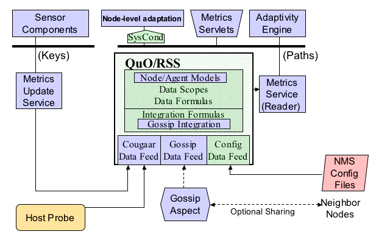

|  |
The core underlying infrastructure used by the Metrics Services is the Resource Status Service (RSS). The RSS accepts low-level tagged input in the form of key-value pairs, which it can process very efficiently. The entities which handle this input are known as DataFeeds. This low-level data is then propagated through a hierarchical graph of data-encapuslating nodes known as DataScopes, using both forward and backward chaining. Each DataScope supports one or more DataFormulas, each of which in turn can calculate a value using the encapsulated data as well as data derived from other DataFormulas. DataFormulas, in other words, form a dependency chain that transforms and processes data. The final result of all this is raw sensor-like data coming in and processed domain-relevant data going out.
The specific subclasses of DataScope in any given RSS depends on the domain. In the case of COUGAAR, interesting DataScopes represent Agents, Nodes, Hosts, inter-Agent data flows, inter-Host data flows, etc. Similarly, the specific subclasses of DataFeed in any given RSS depends on the raw data sources that are available. In the case of COUGAAR these would include URLs that provide default values in property-list syntax, real-time measured host data (load average, number of open sockets, etc), and data specified directly through the MetricsUpdateService.
Queries into the MetricsService use path specifications to indicate the location of a given DataScope in the RSS knowledge base, and a formula on that DataScope. If the DataScope itself can handle the query it will do so. If not it will pass it to its parent. This makes it possible to ask, say, an Agent DataScope for Node or Host data.
Each COUGAAR Node includes its own RSS, which is primarily responsible for handling local data in the Node. In order to provide a more global view, the GossipAspect was added. Gossip defines a new kind of DataFeed which is used for inter-RSS communication, and which piggybacks requests and responses onto ordinary COUGAAR messge traffic. This allows Nodes to share metrics without requiring any new form of inter-Node communication.
As an example of how data moves through the RSS, the rest of this section describes the flow of raw sensor data into the RSS from a COUGAAR Component via the MetricsUpdateService, and back out again as processed higher level data to some other Component via the MetricsService. The rest of this is still TBD.
For more details on keys, see Keys. For more detail on paths, see Paths.